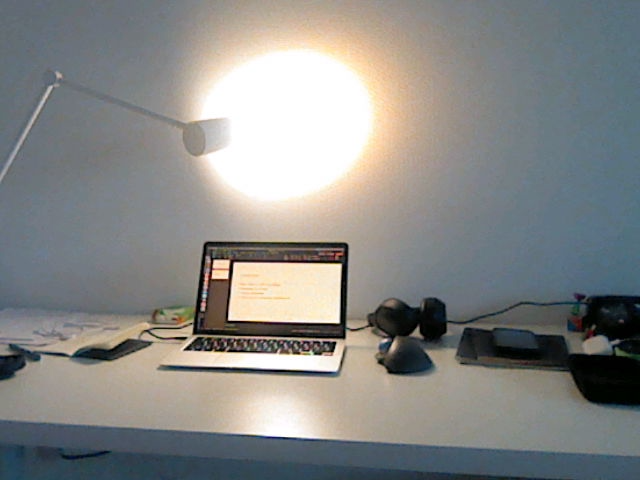

my setup
there will be a blog post about it in the future, because it is something that i think is pretty important

my basic setup
date 14. january 2025
on one hand i don't really want to give the models, because that is not what matters, but on the other hand it is kinda part of it
the things i use:
- macbook air 13: late 2020 (m1)
- logitech ergo m575
- airpods pro & sony xm4 (headphones)
- iphone
my music taste
this is all personal taste and i am not an expert. here is a list of my current (january 2025) favorite songs: (not in any particular order)
bop alloy (substantial & marcus d):
commencement
10 winters
why the world weeps
still think different
another day in the life
generally the whole album "substantial & marcus d are bop alloy" from 2010
milo / r.a.p. ferreira:
landscaping (feat. e l u c i d)
pablum // celeskingiii
sorcerer
ornette's swan song
zen scientist (feat myka 9) - kenny segal & milo
mostly the whole album "things that happen at day // things that happen at night" from 2013
deca (recently discovered):
salome
edenville
gabriel ratchet
anything from nujabes goes
book recommendations
here some of my favorite books, i plan to make a blog entry to each of those
- "the stranger" from albert camus